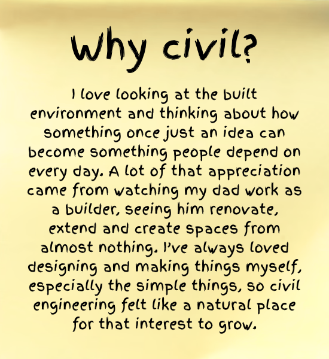
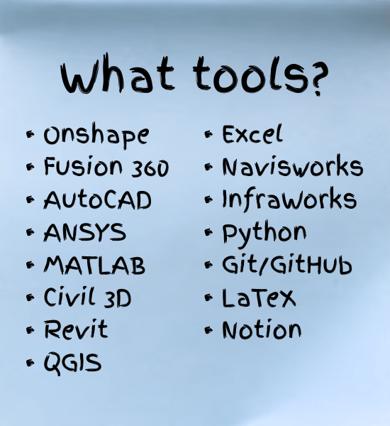
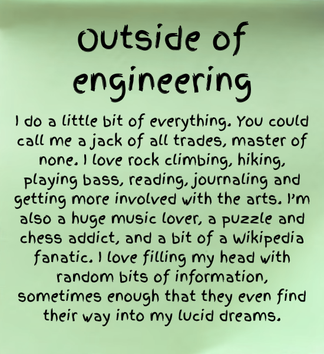
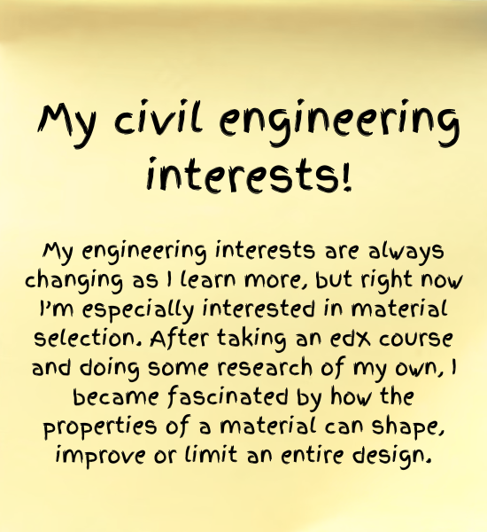
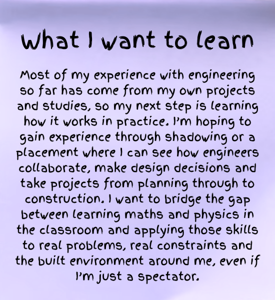
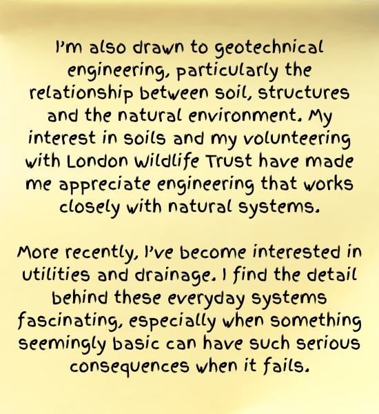

" Tell me about yourself "
I’m an incoming Civil Engineering student on a gap year. I like understanding how things work, then working out how they could work better.
I’m especially interested in the structures, transport systems and public spaces that shape everyday life. This portfolio is where I keep track of what I’m learning and making along the way.




